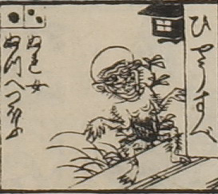

兵主部；ヒョウスベ，男；オトコ

ひょうすべ。頭は禿げており、額にしわが寄っている。口を開けている。体毛が濃く、裸身である。両腕を開いて、蟹股で立っている。
出典：親書誌：U426_nichibunken_0082：新版妖怪飛巡雙六；シンパンヨウカイトビマハリスゴロク／日付：2007／資源識別子：U426_nichibunken_0082_0018_0000
Copyright (c)2010- International Research Center for Japanese Studies, Kyoto, Japan. All rights reserved.